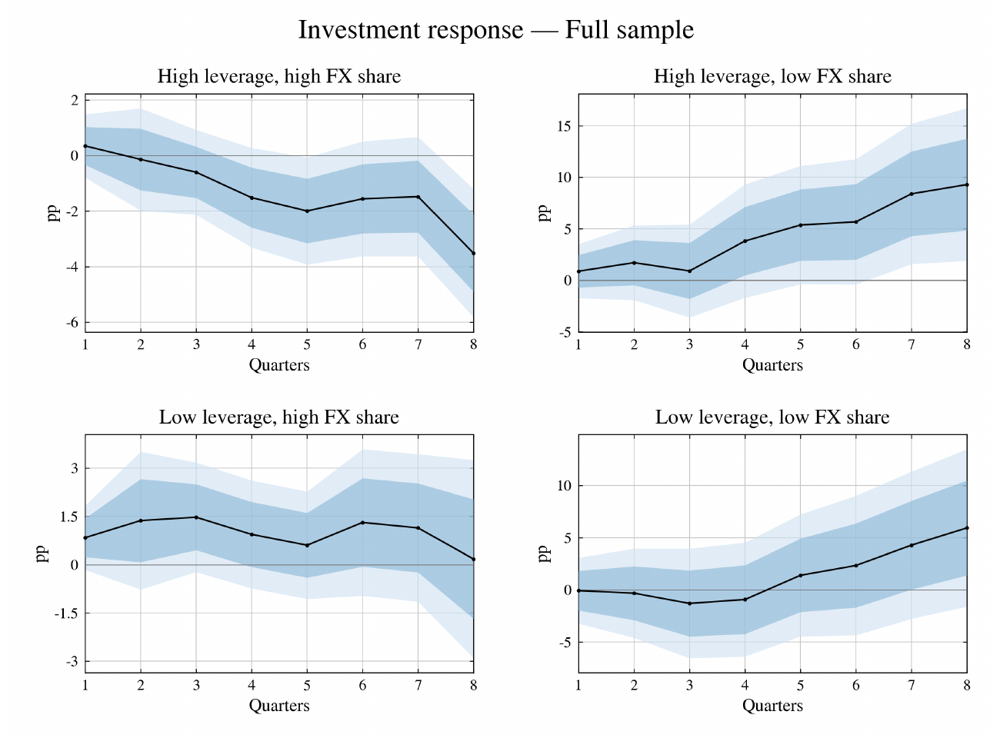

Foreign Currency Borrowing and the Investment Channel of Monetary Policy

Abstract
This paper studies how foreign currency debt affects firms’ investment response to monetary policy. Using firm-level data on foreign currency bond issuance across 15 countries, I document that highly leveraged firms with high foreign currency debt respond less to monetary easing than firms with similar leverage and less foreign currency debt. For a firm at the 75th percentiles of both leverage and foreign currency debt share, investment falls by 3.5 percentage points eight quarters after a one percentage point easing, while it rises for a highly leveraged firm with little foreign currency debt. A heterogeneous-firm small open economy model in which firms choose the currency of their debt reproduces this pattern. I find that while dollar debt dampens the aggregate investment response to easing only mildly, leaning against depreciations is costly: after a foreign monetary tightening, the more the central bank defends the currency, the larger the fall in investment.